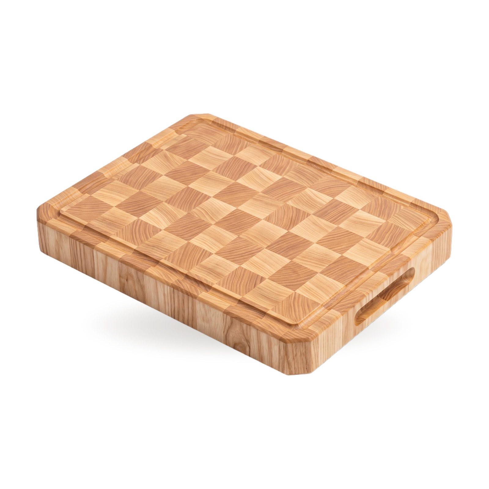
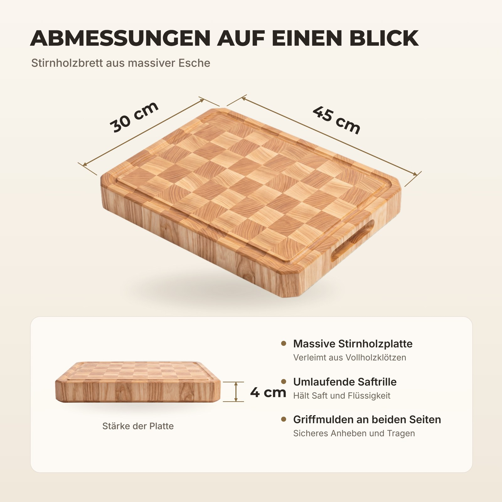
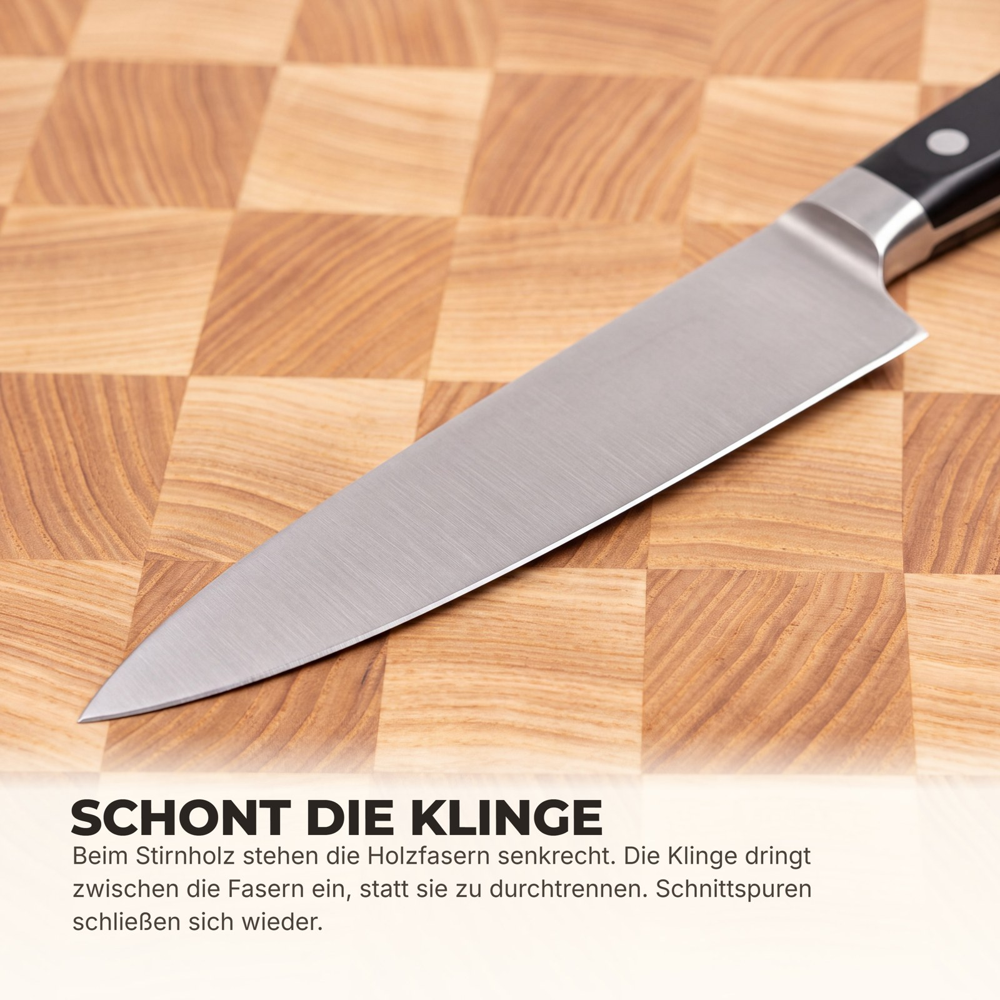

Образец к заявке, сделан до отклика. Фото вашего товара у меня нет, доска на слайдах собрана мной, размеры на инфографике условные. Финальные слайды делаю по вашим фото, брендбуку и вашим цифрам. Формат 3000x3000, здесь показаны уменьшенные копии.


